Screenshot Vegas Karaoke Player
Guarda tutte le schermate principali del programma e del Pannello DJ Online.
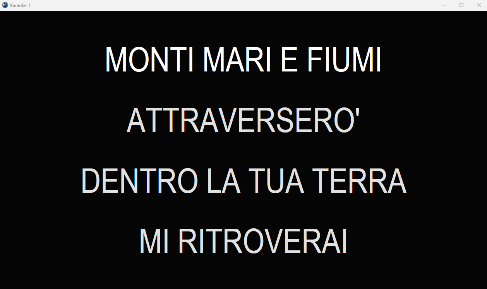
Karaoke Fullscreen
Testo grande e leggibile per TV, proiettori e monitor palco.
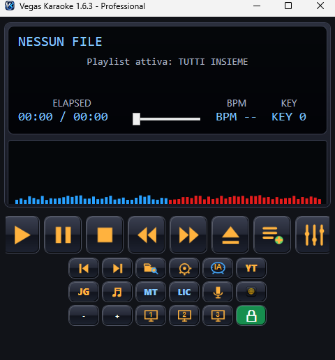
Player principale
Controllo principale della serata karaoke.
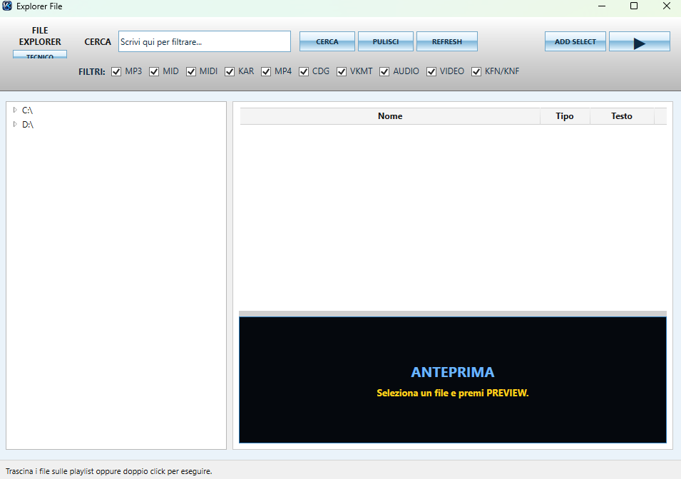
Explorer File
Ricerca e filtri per grandi archivi karaoke.
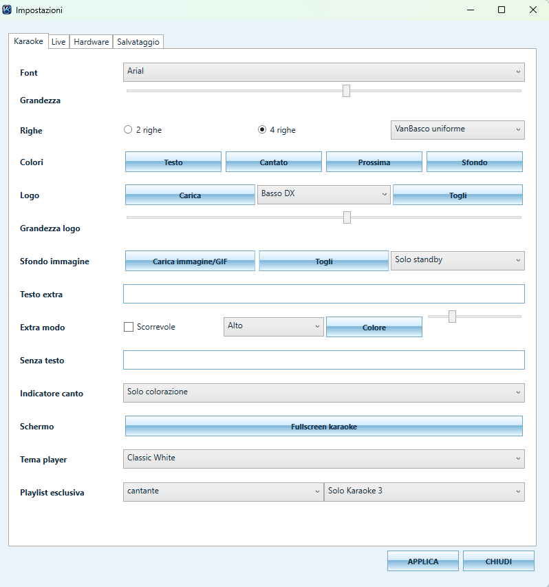
Impostazioni Karaoke
Personalizzazione testi, colori, logo e sfondo.

Mixer MIDI
Controllo canali, SoundFont, key, BPM ed EQ.
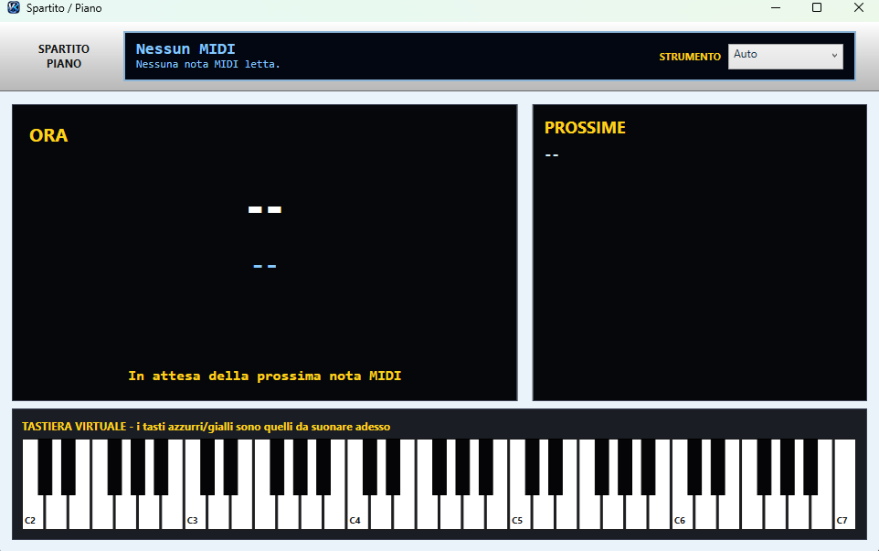
Spartito Piano
Visualizzazione note MIDI e tastiera virtuale.
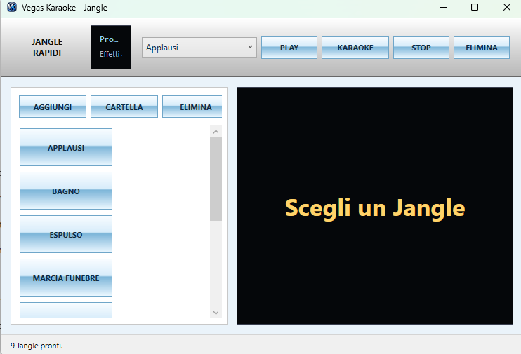
Jingle Rapidi
Effetti sonori e jingle per animazione.
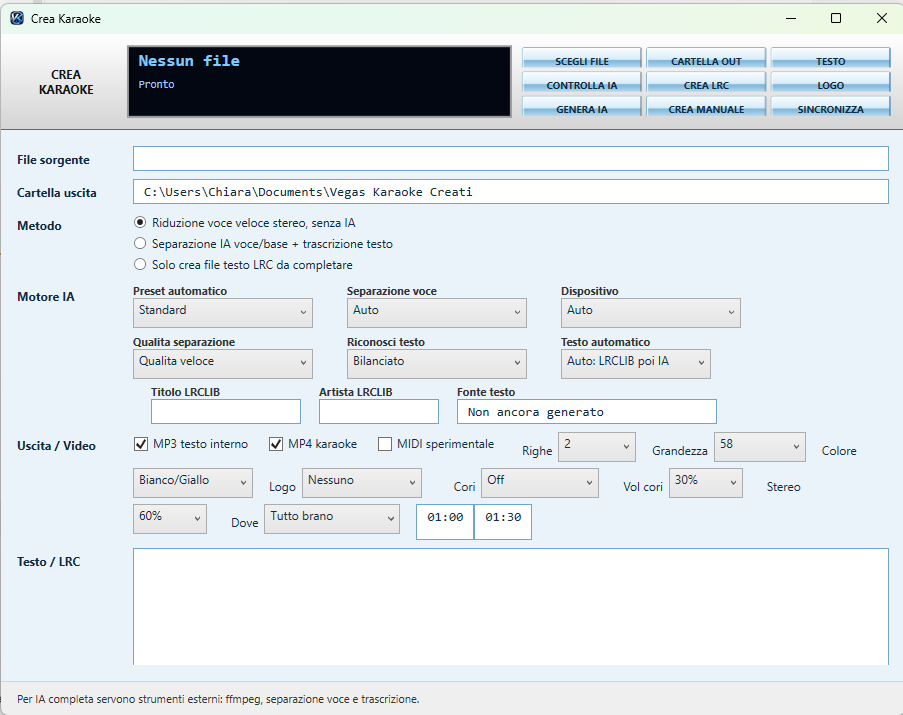
Creazione Karaoke IA
Creazione karaoke da MP3/MP4 con strumenti IA.
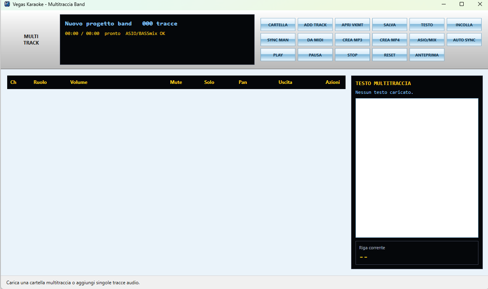
Multitraccia Band
Gestione progetti multitraccia per live.
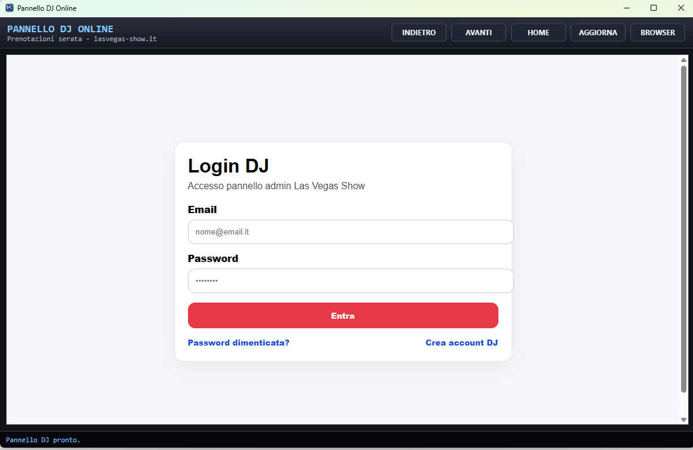
Pannello DJ Login
Accesso al Pannello DJ Online.

Richiesta smartphone
Modulo pubblico per prenotare canzoni.
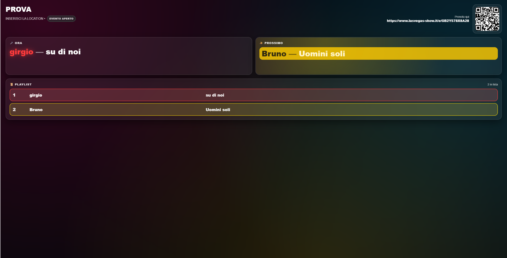
Playlist live
Schermo pubblico con coda e QR Code.
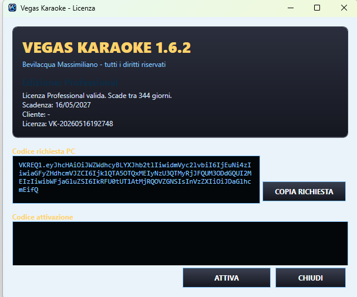
Licenza
Attivazione e stato licenza.
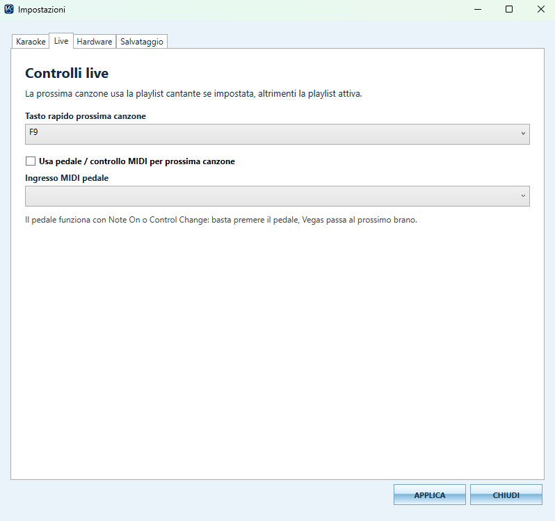
Controlli Live
Tasto rapido F9 e supporto pedale MIDI per passare alla prossima canzone durante serate live.
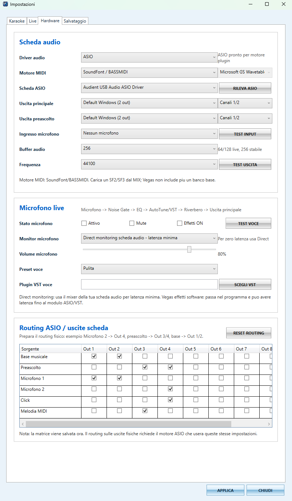
Hardware Audio e Routing
Configurazione ASIO, uscite dedicate, microfono live, buffer audio e matrice routing professionale.
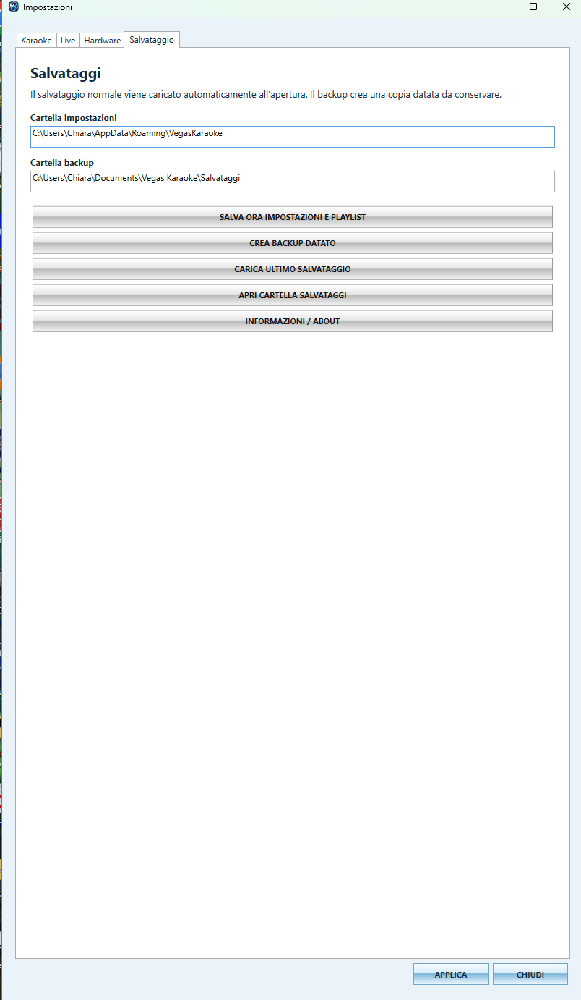
Salvataggi e Backup
Salva impostazioni, playlist e crea backup datati per conservare configurazioni e serate.
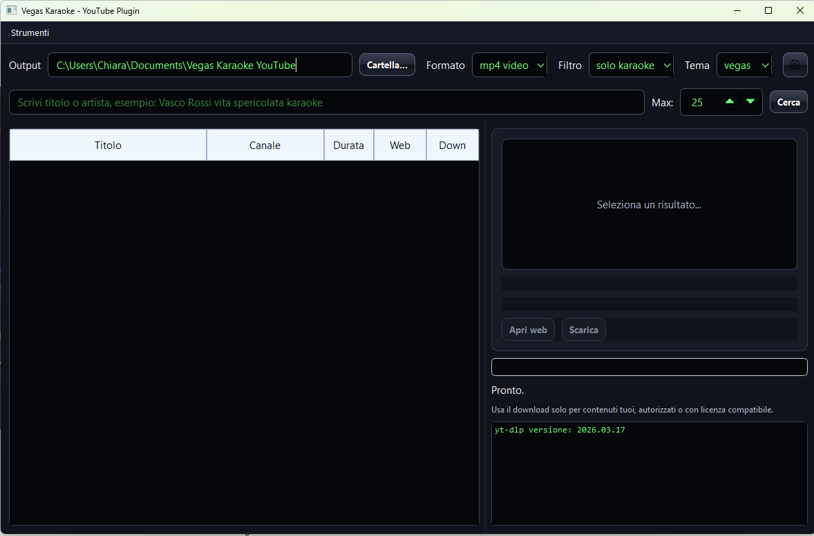
YouTube Plugin
Strumenti per contenuti online autorizzati o con licenza compatibile.